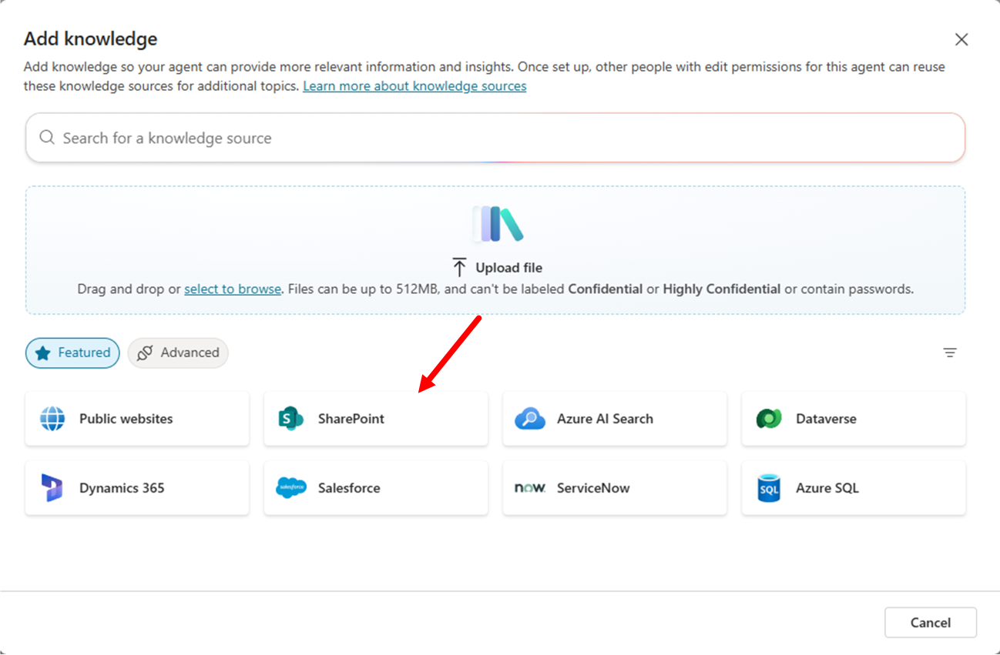
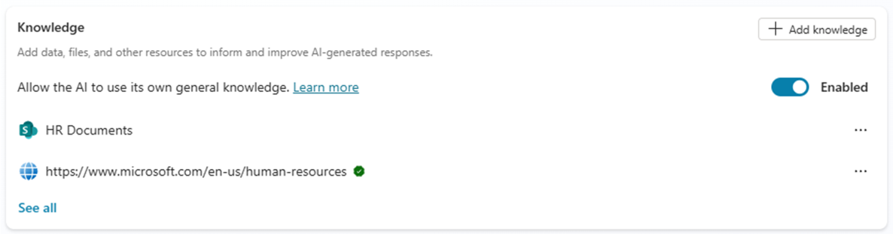
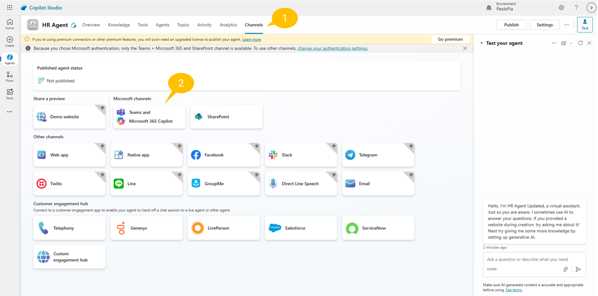
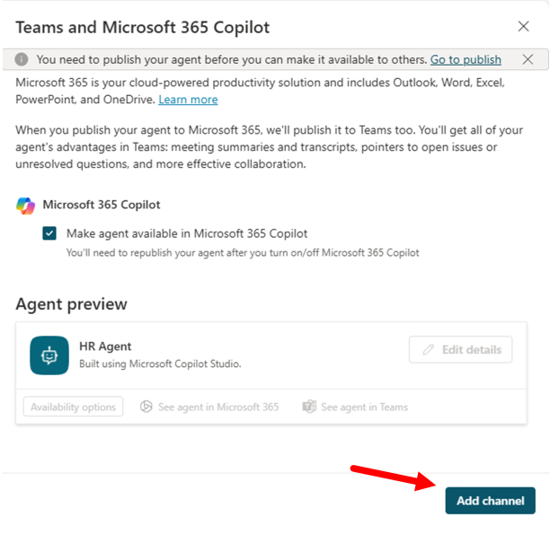

ラボ MCS1 - 初めてのエージェント
このラボでは、Microsoft Copilot Studio を使って最初のエージェントを作成します。作成するエージェントは、ユーザーが従業員の採用や解雇のための HR ポリシーとプロセス、キャリア開発、学習パスの定義に関する情報を見つけるのを支援します。エージェントのナレッジ ベースには、SharePoint Online に保存されたドキュメントと公開 Web コンテンツが含まれます。
このラボで学習する内容:
- Copilot Studio でエージェントを作成する方法
- エージェントにカスタム アイコンを設定する方法
- エージェントのナレッジ ソースを構成する方法
- Microsoft Teams でエージェントを公開する方法
Microsoft Copilot Studio でエージェントを構築したい場合は、次のラボを実施してください
注意事項
これらのサンプルおよびラボは、教育目的およびデモ目的のみを意図しており、本番環境での使用を目的としていません。本番環境で使用する場合は、生産品質にアップグレードしてください。
Exercise 1 : Copilot Studio でエージェントを作成する
最初の演習では、生成 AI を使用して新しいエージェントを作成し、求めている内容を説明します。また、エージェント用のカスタム アイコンを設定し、エージェントをテストします。
Step 1: 新しいエージェントを作成する
新しいエージェントを作成するには、ブラウザーを開き、対象 Microsoft 365 テナントの職場アカウントで https://copilotstudio.microsoft.com にアクセスして Microsoft Copilot Studio を起動します。
画面左側の Create ボタンを選択します。次のスクリーン ショットのように表示されます。

新しいエージェントを作成できるページにリダイレクトされます。Copilot Studio では、New agent オプションを選択してゼロからエージェントを作成するか、あらかじめ用意された便利なエージェント テンプレートから開始するかを選べます。このラボでは簡単のために New agent を選択してゼロから開始します。

デフォルトでは、Copilot Studio に自然言語でエージェントの概要を説明できます。これは非常に便利で、求めている内容を簡単に説明するだけで、Copilot Studio が入力を処理し、ニーズに合わせてエージェントを生成してくれます。自然言語で説明したくない場合は Skip to configure を選択して手動で構成することもできます。
このラボでは次の初期説明を入力します。
You are an agent helping employees to find information about HR policies and procedures,
about how to improve their career, and about how to define learning pathways.
Copilot Studio から名前を尋ねられたら、カスタム エージェントの名前を「HR Agent」と入力します。その後、以下の指示を提供して Copilot Studio に特定情報の強調または回避を指示します。
Emphasize everything that helps team building, inclusion, and the growth mindset
さらに、プロフェッショナルなトーンを設定するために次の入力を行います。
It should have a professional tone
Copilot Studio から初期データ ソースの設定を求められたら、以下の指示を入力します。
Let's use this website: https://www.microsoft.com/en-us/human-resources
指定したサイトが組織所有であることを確認する必要があります。

重要
このサンプル エージェントでは、データ ソースとして Microsoft の HR Web サイトの公開コンテンツを使用します。指定したデータ ソースを組織が所有していることを確認し、そのサイトで Microsoft Bing の検索結果を有効にする必要があります。独自のエージェントを作成する際は、自社が実際に所有する HR サイトの URL を指定してください。
これでエージェント作成の準備が整いました。画面右側には、Copilot Studio に指示した内容に基づいて設定されたエージェントの機能と能力が常に表示されます。右上の Create ボタンを選択し、Copilot Studio がエージェントを作成するまで待ちます。
エージェントが準備できると、次のような画面が表示されます。

右側のテスト パネルを使用してすぐにエージェントをテストするか、Overview タブでさらに設定を調整できます。
Step 2: エージェントのアイコンを変更する
まず、Overview タブ右上の Edit ボタンを選択してエージェントのアイコンを変更します。Details セクションが編集モードに切り替わります。

演習 Step 1 で入力したステートメントが Description と Instructions フィールドに反映されています。
Change icon ボタンを選択すると、カスタム アイコンをアップロードできるダイアログが表示されます。必要に応じて こちらのアイコン を使用できます。

新しいアイコンのアップロードが完了したら Save ボタンを選択します。
Step 3: エージェントをテストする
エージェントをテストするには、右側のパネルでプロンプトを入力するだけです。たとえば、次のプロンプトを入力します。
What is our mission?
以下のスクリーン ショットは、データ ソースとして指定した Web サイトの内容に基づいてエージェントが返した回答の例です。

エージェントは、回答の出典としてデータ ソースのページへの参照を提示し、回答が Azure OpenAI から生成されたものであることも示しています。
Exercise 2 : ナレッジ ベースを拡張する
この演習では、Microsoft SharePoint Online に保存されているドキュメント (Word と PDF) をエージェントの追加ナレッジ ベースとして追加します。
Step 1: SharePoint Online ナレッジ ベース ドキュメントを追加する
この リンク を選択して、いくつかのファイル (Word、PowerPoint、PDF) を含む zip ファイルをダウンロードします。
zip を展開し、Copilot Studio でエージェントを作成しているのと同じテナントの SharePoint Teams サイトの Documents ライブラリにアップロードします。これらのドキュメントは、エージェントに追加ナレッジ ベースを提供するために Microsoft 365 Copilot で生成されたものです。
サイトの絶対 URL をコピーします。例: https://xyz.sharepoint.com/sites/contoso

前に作成したエージェントの Overview タブで Knowledge セクションまでスクロールします。Exercise 1 の Step 1 で設定した Web サイトが表示されています。+ Add knowledge を選択し、SharePoint サイトとそのドキュメントを追加のナレッジ ソースとして追加します。

表示されたダイアログでは、以下のような追加ナレッジ ソースを追加できます:
- Files: 手動でファイルをアップロードしてナレッジ ベースに追加
- Public websites: 追加の Web サイトを追加
- SharePoint: SharePoint Online のサイトまたはライブラリを設定
- Dataverse: Dataverse のテーブルを追加
- Advanced: Azure AI Search、Azure SQL、Microsoft Copilot Connectors、またはサードパーティ データ接続を使用
SharePoint を選択し、表示されたダイアログにアップロードしたファイルのサイト URL を入力して Add を選択します。
SharePoint データ ソースを構成する際には Name と Description も指定する必要があります。意味のある名前と説明を設定することが重要です。Copilot Studio はデータ ソースの内容をより適切に理解でき、今後のラボで生成オーケストレーションを有効にした場合、生成 AI による回答時に適切なデータ ソースを特定しやすくなります。

画面下部の Add ボタンを選択し、Copilot Studio が新しいナレッジ ベースを処理するまで待ちます。
ナレッジ ベースが更新されると、Overview タブにパブリック Web サイトと SharePoint Online サイトの両方が表示されます。

重要
Copilot Studio でエージェントのナレッジ ベースとして SharePoint Online サイトを構成する場合、ユーザーはアクセス権を持つドキュメントからのみ回答やコンテンツを取得できます。セキュリティとアクセス制御は Microsoft 365 のセキュリティ インフラストラクチャによって保証され、Copilot Studio エージェントは現在のユーザーの代わりにドキュメントへアクセスします。
Step 2: 更新したエージェントをテストする
右側のパネルで再度エージェントをテストできます。たとえば、次のプロンプトを入力します。
How can we hire new people in our company?
エージェントは採用手続きに関する情報を SharePoint Online ナレッジ ベースのドキュメントへの参照とともに返します。

さらに、次のプロンプトをエージェントに入力してみてください。
How can I cook spaghetti alla carbonara?
HR 関連ではないリクエストでも、エージェントが回答を返すことに気付くでしょう。もちろん、パスタが好きならスパゲッティ・アッラ・カルボナーラの作り方を試すこともできます！🍝 しかし、これは必ずしもエージェントの意図した動作ではありません。エージェントは特定のトピックや領域に特化したアシスタントであるべきだからです。
Step 3: 一般知識を無効化する
エージェントをカスタム ナレッジ ベースのみに完全に集中させるには、General knowledge を無効にする必要があります。右上の Settings を選択し、既定でアクティブな Generative AI タブを確認して Knowledge セクションまでスクロールし、「Use general knowledge」を無効にします。

一般知識を無効にしたら、再度コンテキスト外の質問をしてみてください。

エージェントは、要求された内容について支援できない旨を適切に回答します。
一般知識に関する追加情報
Microsoft Copilot Studio で作成したエージェントのナレッジ ソースに関する詳細は、こちらの記事 を参照してください。
Exercise 3 : エージェントを公開する
ラボの最後の演習では、カスタム エージェントを Microsoft Teams に公開します。
Step 1: Microsoft Teams にエージェントを公開する
Copilot Studio で作成したエージェントを公開するには、エージェント エディター右上の Publish ボタンを選択します。

コマンドを選択すると確認を求められます。確認後、公開プロセスが開始され、「Publishing ...」メッセージが表示される間しばらく待ちます。エージェントの公開は対象 Power Platform 環境に登録するだけで、まだ特定プラットフォームには配信されていません。
エージェントを実際に特定プラットフォーム (チャネル) で使用できるようにするには、まず 1️⃣ エージェント エディターの Channels タブを選択し、次に公開先チャネルを 1 つ以上選択します。たとえば、Microsoft Teams にボットとして公開するには、ターゲット チャネルとして 2️⃣ Teams + Microsoft 365 を選択します。

デフォルト設定でエージェントを作成・公開すると、Microsoft 認証が構成され、Teams、Power Apps、Microsoft 365 Copilot で Microsoft Entra ID 認証が使用されます。この既定の認証設定では、エージェントは Microsoft Teams にのみ公開可能で、前のスクリーン ショットの Channels タブ上部に警告メッセージが表示されます。
Copilot Studio 認証モデル
Copilot Studio のエージェント認証については、Configure user authentication in Copilot Studio を参照してください。
Microsoft Copilot Studio の Premium ライセンス
上記スクリーン ショットにはライセンシング モデルと Premium ライセンス要件に関する情報バーも表示されています。Copilot Studio で Premium コネクタなどのプレミアム機能を利用する場合は、ライセンスをアップグレードする必要があります。学習やテスト目的の場合は、Premium ライセンスの 60 日間無料トライアルを有効化できます。
Teams + Microsoft 365 チャネルを選択するとサイド パネルが表示され、Add channel ボタンを選択できます。

Microsoft Teams チャネルが有効化されると、サイド パネルが更新され、確認メッセージとともにエージェントの詳細を編集したり Microsoft Teams クライアントで開いたりするコマンドが表示されます。Availability options ボタンを選択して、Microsoft Teams でエージェントにアクセスする方法を確認できます。
Microsoft 365 Copilot をサポートするようにチャネルを登録した場合は、See agent in Microsoft 365 リンクを選択して、Microsoft 365 Copilot チャット エクスペリエンスで直接エージェントを利用できます。

Availability options ボタンを選択すると、以下の操作が可能です:
- Microsoft Teams でエージェントを使用するためのリンクをコピー
- Teams アプリ ストアにアップロードできる ZIP パッケージをダウンロード
- エージェントを Teams アプリ ストアで利用可能にし、全社または特定ユーザーに限定して公開

これで Microsoft Teams でのエージェント公開が完了しました。
Step 2: Microsoft Teams でエージェントをテストする
Microsoft Teams でエージェントをテストする準備ができました。Availability options パネルで Copy link ボタンを選択してリンクをコピーし、新しいブラウザー タブで貼り付けて ENTER キーを押します。

最初に、エージェントを表す新しいアプリを表示する Microsoft Teams クライアントが開きます。Add ボタンを選択してクライアントに追加し、続くダイアログで Open を選択します。

しばらくすると、Microsoft Teams クライアントにボット (実際にはエージェント) とのチャットが表示されます。次のようなプロンプトを入力します (以前に使用したものと同じです):
How can we hire new people in our company?
回答を待つと、エージェントが HR のコンテキストで、ナレッジ ベースのドキュメントへの参照付きで返答します。

回答の上部には「AI generated」という注意書きが表示され、ユーザーに AI プラットフォームを利用していることを知らせます。
おめでとうございます！
これでエージェントは完全に機能し、Microsoft Teams で利用可能になりました。次のラボで動作をさらにカスタマイズして微調整します。
こちらから開始 して Lab MCS2 で Copilot Studio を使い、エージェントにトピックを定義しましょう。